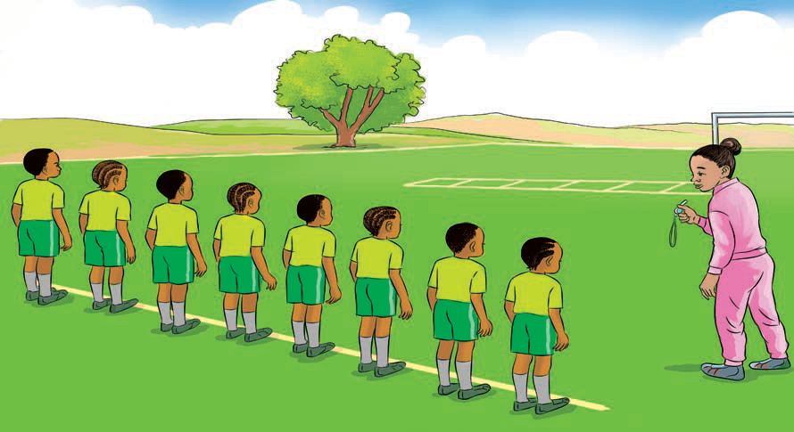

Exercise 7
1. What actions can you do while jumping over the rope?
2. Explain why people play this game.

Let us play the box game.
This game is played with 8 or more players.
The number of boxes should be two less than the number of players.

How to Play
1. Stand on the starting line.
2. Get ready and listen to the referee’s whistle.
3. Run to touch a box when the whistle blows.